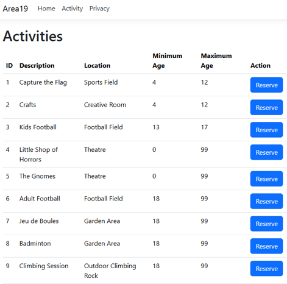

Fontys ICT · Semester 2 · Web Application Development
Area19
Area19 is a web application developed during Semester 2 of my Bachelor's degree in ICT at Fontys University of Applied Sciences. Designed for a holiday park in the Achterhoek region of the Netherlands, the application allows guests to browse activities and make reservations. My main responsibilities included designing and implementing the relational SQL database, developing backend functionality, and integrating the database with the web application using Entity Framework Core. The application follows a three-layer architecture to separate presentation, business logic, and data access.
Technologies
Highlights
- Database Development – Designed and implemented a relational SQL database with primary and foreign keys to manage guests, activities, and reservations.
- Backend Development – Developed models, repositories, services, and database integration using C# and Entity Framework Core.
- Three-Layer Architecture – Structured the application into presentation, business, and data layers to improve maintainability and scalability.
- Reservation System – Implemented functionality allowing guests to browse activities and make reservations through the web application.
- Server Deployment – Collaborated on deploying and validating the database within the server environment.
Screenshots

